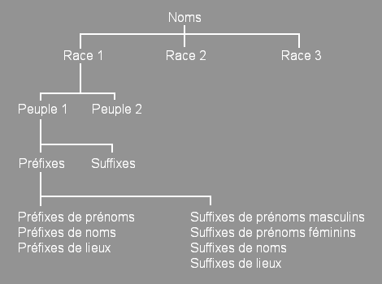

La création de noms : tout un art
Créer quelques noms propres c'est relativement facile ; on a tous de temps en temps des petites illuminations sur une syllabe qui déchire ou bien un nom commun détourné en nom propre. Là où ça devient compliqué c'est quand, pour un jeu où chaque PNJ porte un nom, il faut des tonnes de noms, et que ces noms doivent avoir des consonances communes selon la race/région… Sans oublier les noms de lieux. La création de noms est donc en fait une tâche complexe et longue (rassurez-vous, rien d'infaisable :p).
Attention : ce cours, qui permet de produire « en masse » des noms intéressants, est long. Si vous avez comme objectif de créer un jeu de type Final Fantasy où seuls les héros sont nommés (et où les PNJ s'appellent « Villageois 1 » par exemple :D), vous pouvez aller directement à la dernière partie. Elle explique les fondements d'un nom de qualité (ce qu'il faut faire — et ne pas faire) en vous épargnant le travail rendant crédible et homogène une longue série de noms (nécessaire si votre projet est plus vaste).
Attention (bis) : fuyez les générateurs tout fait (du genre ceux proposant noms elfiques, nanesques et consorts, à part pour un fan game du Seigneur des Anneaux, c'est pas bon) ou complètement aléatoires (prenant des lettres au hasard).
Ce cours est divisé en 4 parties :
- Dans la première, on va voir comment faire un brassage de sonorités pour en tirer une liste de syllabes.
- Dans la deuxième, on va produire à partir de ces syllabes une série de noms « bruts ».
- Dans la troisième, on classera par groupes des préfixes et des suffixes destinés à créer des prénoms, des noms de famille et des noms de lieux.
- Dans la quatrième et dernière partie, on sélectionnera et on retouchera les noms bruts pour en tirer les noms finalisés.
Pour ce qui est des outils nécessaires, le bloc-notes intégré à Windows est indispensable (et suffisant comme logiciel de traitement de texte). Quelques programmes supplémentaires (des générateurs) vous seront proposés dans la première et deuxième partie.
1. Sonorités
a. Par où commencer ?
Il existe plusieurs méthodes pour démarrer. Je vous en propose une qui marche particulièrement bien (et à vrai dire, je n'en ai pas trouvé de meilleure). En fait, il s'agit de débarrasser l'alphabet que nous utilisons de plusieurs lettres, afin de créer des sonorités particulières. Je vais prendre un exemple tiré d'un de mes propres projets, avec le peuple Cilde (exemple qui me servira plus loin dans ce cours). On va sélectionner un nombre restreint de lettres, le « brasser » pour en tirer des syllabes variées et à partir de là, essayer de construire de « vrais » noms.
On part avec : aeiouy — bcdfghjklmnpqrstvwxz (il y a bien les 26, vous pouvez compter :D).
En gros je diviserai ces lettres en 3 groupes : celles qui vont amener des sonorités dures (k, r, t, etc.), celles qui vont amener des sonorités douces (d, n, l, etc.) et celles qui vont amener des sonorités « étranges » (y, w, x, etc.). Hé oui, mon cours est extrêmement franco-centré. Pour un Chinois, l'emploi de z et de x au milieu des noms est beaucoup plus habituel que pour un Français… Quoiqu'il en soit, il est plutôt conseillé de garder toutes les voyelles (qui « lient » les consonnes, bien évidemment. Ok, certaines langues d'Europe de l'Est me feront mentir). A la limite, vous pouvez en éliminer une voire deux.
Pour mon exemple (le peuple cilde), je veux des sonorités qui dégoulinent pas mal, avec juste quelques consonnes un peu dures (sinon ça ressemblera à de l'elfique :p) mais rien d'étrange. Je vais aussi m'amuser à supprimer le u et le y pour colorer encore davantage ces noms. En taillant dans le lard, j'obtiens : aeio — cdlmnrstv.
Sacrée réduction non ? Je suis passé de 26 à 13 (j'y suis allé volontairement un peu fort, car il est important que l'on reconnaisse bien les noms associés à ce peuple ; moins il y a de lettres au début, plus les noms se ressembleront à la fin — mais bien sûr vous pouvez choisir de ne supprimer que quelques lettres, voire aucune !). Si vous voulez, vous pouvez utiliser une méthode alternative, mais qui demande déjà de faire un premier pas imaginatif : dresser une liste de noms, en partant de rien, et relever dedans les lettres communes. Mais bon, l'intérêt de ce cours est d'échapper à cette contrainte de « partir de rien » (la feuille blanche, c'est jamais bien engageant). Une chose importante : conservez-bien, dans cette sélection, les lettres déjà présentes dans le nom même du peuple (par exemple, pour « cilde », je garde le c, le i, etc.). Et cela pour la cohérence.
b. Premières constructions de syllabes
Pour cette deuxième sous-partie, on va avoir besoin de l'aide d'un générateur. Le travail pourrait être fait de tête, mais le générateur nous facilite la tâche. Personnellement, j'utilise le petit programme NewName, qui fait parfaitement l'affaire.
Rentrez dans les champs appropriés votre sélection de voyelles et de consonnes. Décochez noms composés, numéros, majuscules. Laissez coché syllabes, de 1 à 3, et générez !
Le logiciel va vous donner divers noms (ainsi que quelques syllabes isolées) et dans le tas plusieurs qui pourraient être pris tels quels. Relevez tous les noms intéressants mais aussi toutes les syllabes et associations de syllabes qui vous plaisent, qui « sonnent » bien. Attention, c'est cette partie qui détermine la « couleur » finale des noms du peuple, donc il faut vraiment s'appliquer. Mais n'hésitez pas à générer vite et beaucoup ; laissez parler votre instinct, générez, générez. Et cueillez au vol tout ce qui sonne bien !
Avec ma sélection de lettres de départ, j'obtiens : Val — Memnel — Aramid — Nirteven — Tel — Torel — Ren — etc.
C'est le moment de regrouper toutes vos syllabes sélectionnées en une unique liste. C'est aussi l'heure du second tri, « à tête reposée ». Éliminez toutes les syllabes qui vous paraissent trop hétérogènes au milieu du reste. Gardez uniquement ce qui vous plaît vraiment : l'idéal est d'en obtenir une grosse quarantaine (une trentaine semble être un minimum, mais bien sûr tout dépend du nombre de noms que vous voulez créer). N'oubliez pas aussi de décomposer tous les noms relevés.
Par exemple, Nirteven me donne -nir, -te, -ven. Mais j'aurai tout aussi bien pu décomposer en -nirt -ev -en.
Pour ce qui concerne le nombre de lettres par syllabe (2, 3 lettres voire 4), tout dépend de ce que vous voulez obtenir à la fin. Ne garder dans votre liste que des syllabes à 2 lettres, par exemple, vous donnera des noms plus spéciaux, originaux, que si vous les prenez toutes sans distinction. N'hésitez pas à intégrer dans vos syllabes choisies des consonnes muettes, ou bien des successions de consonnes (ett, ahj, lpo peuvent être retenues si elles correspondent à l'aspect des noms que vous désirez).
2. Production
C'est la partie la plus facile (car uniquement technique) : il s'agit maintenant de configurer un générateur qui permettra de créer rapidement des tonnes et des tonnes de noms, qui auront donc tous des consonances communes. Fil m'a retrouvé une de ses créations, un générateur personnalisable (Note de Fil : excusez la laideur, le petit format et le Flash Player prérequis. Cette chose doit bien dater de 2006.).
Pour ce qui est de son utilisation : ouvrez tout d'abord le fichier .xml (avec le bloc-notes), et à l'intérieur des guillemets, inscrivez toutes les syllabes obtenues précédemment, sans oublier aussi les voyelles.
Pour mon exemple, ça donne :
<syllabe txt="a"/>
<syllabe txt="e"/>
<syllabe txt="i"/>
<syllabe txt="o"/>
<syllabe txt="val"/>
<syllabe txt="mem"/>
<syllabe txt="nel"/>
[…]
Pas de difficulté, il suffit de rentrer les syllabes telles quelles (par ordre alphabétique si ça vous amuse, mais de toute façon le générateur choisira aléatoirement :p). Et voilà, il n'y a plus qu'à lancer le fichier .html et à générer. On obtient rapidement et facilement une grande série de noms se ressemblant. Mais bien entendu, tous ne sont pas « exploitables », tous ne sonnent pas bien… Ce serait trop facile ! Il nous reste encore plusieurs étapes : un gros travail de catégorisation et de retouche.
3. Catégorisation des préfixes et suffixes
a. Quelques mises au point
Nous allons maintenant inventer et classer des préfixes et des suffixes qui nous serviront à transformer les noms bruts en prénoms, noms de familles ou noms de lieux. Pour bien faire, il faudrait d'abord inventer une langue, de laquelle ils découleraient tous. Cohérence et réalisme garantis, mais à part Tolkien je vois peu de gens capables de cette prouesse.
Analysons rapidement un exemple typiquement français : Marie Dujardin, habitant la commune de Bellerive.
- Le prénom Marie correspond à la francisation du prénom hébreux Myriam. Comme la plupart des prénoms donnés en France, celui-ci provient d'un saint (une sainte en l’occurrence). On voit ici toute la complexité de l'apparition d'un prénom dans une langue, car cette apparition peut avoir des origines très diverses : adaptation d'un nom commun, d'un nom étranger, d'un personnage saint…
- Le nom Dujardin est assez explicite : le patronyme renvoie à un lieu (donc à un nom commun). On peut d'ailleurs souvent rattacher un nom à une caractéristique (lieu d'habitation, particularité physique, habitude comportementale/morale…).
- Enfin le nom du lieu, Bellerive, est du même type : sans doute ce village est-il situé à proximité d'un cours d'eau.
Cette analyse rapide et primaire, très éloignée d'un véritable travail étymologique, n'a qu'un seul but : vous montrer toute la difficulté que l'on rencontre quand on veut donner du sens et une origine aux noms que l'on crée. L'invention préalable d'une langue est nécessaire à l'élaboration d'un système de noms poussé.
Mais une méthode légère et alternative est possible. On va en fait se contenter de reprendre des suffixes et des préfixes communs, pour une meilleure homogénéité au sein de chaque catégorie de noms (prénoms, lieux, noms patronymiques) et pour plus de réalisme. Vous avez certainement déjà senti que la sélection de lettres au début de ce cours déterminait pour beaucoup l'aspect final des noms. Donc ce que l'on fait tout de suite, c'est juste une meilleure mise en forme. Et selon vos attentes, vos besoins, et un perfectionnisme plus ou moins aigu, cette mise en forme sera plus ou moins longue.
b. On catégorise !
Reprenons notre liste de syllabes créée dans la partie 1. Nous allons en prélever certaines et les répartir en plusieurs groupes. Généralement, les groupes seront :
- Les préfixes de prénoms
- Les préfixes de noms de famille
- Les préfixes de noms de lieux
Et
- Les suffixes de prénoms masculins
- Les suffixes de prénoms féminins
- Les suffixes de noms de famille
- Les suffixes de noms de lieux
Attention ! A ce stade, tout dépend de vous : ce sont vos choix qui vont déterminer l'ampleur de la tâche ! En effet, vous n'êtes pas obligés de créer autant de groupes (en supprimant les préfixes de noms de lieux, par exemple), mais vous pouvez aussi en créer d'autres (en créant des préfixes masculins et féminins, ou en multipliant l'ensemble des groupes par le nombre de races/peuples/régions souhaité…).
Un très bon exemple est celui du Seigneur des Anneaux. Tolkien a nommé un de ses peuples avec des prénoms + noms patronymiques (ex : Bilbo Baggins), mais d'autres peuples ne possèdent qu'un seul nom « générique » (ex : Aragorn, fils d'Arathorn). De plus il a bien évidemment séparé les préfixes/suffixes humains des préfixes/suffixes elfiques et nanesques, mais à l'intérieur du groupe de noms « humains » il a encore séparé les hommes du Rohan de ceux du Gondor… C'est un travail titanesque mais qui apporte une profondeur et un réalisme incroyable à son univers.

Ce schéma vous montre comment s'articule l'arborescence des groupes nécessaire à une catégorisation étendue. Tout ceci nécessite beaucoup d'organisation ! Mais bien sûr, cette catégorisation peut être restreinte.
Pour une catégorisation superficielle, contentez-vous d'attribuer 3 ou 4 syllabes (tirées de votre liste) à chaque groupe, mais rien ne vous empêche d'en attribuer 20 (bien sûr, cela nécessite de se munir auparavant d'une longue liste de syllabes « exploitables » — n'hésitez pas à en générer davantage !). Réserver ainsi quelques syllabes pour les différents types de noms permet de donner des points de repère au futur lecteur/joueur. Il se sentira rassuré de reconnaître dans plusieurs prénoms ou dans les noms de lieux des préfixes/suffixes identiques, et vous gagnerez en crédibilité.
c. Donner du sens
Nous arrivons au moment de déterminer si vous voulez donner un véritable sens à tous vos noms (ou seulement quelques-uns). Vous pouvez en effet inventer une traduction pour chaque syllabe catégorisée.
Exemple : si je sors de ma liste de départ les syllabes nir, et an. - nir me paraît intéressante en position de préfixe. Cette syllabe signifiera « la terre ». Ainsi le prénom Nirien pourrait-il être traduit grosso modo par « le terrien ». Et Nirteven, en tant que nom de lieu, par « la haute terre » (notez que j'utilise le même préfixe pour deux types de noms — je réunis ainsi deux groupes en un seul). En procédant comme ceci, on introduit des éléments intéressants dans son univers sans avoir à élaborer un véritable système linguistique. - an semble mieux convenir comme suffixe. Je vais placer cette syllabe dans le groupe des suffixes de prénoms masculins, mais je ne vais pas inventer de traduction. Je réalise donc un travail partiel, mais toujours cohérent.
Attention, il ne faut pas trop abuser de cette méthode. Vos noms risquent de paraître redondants si vous ré-utilisez trop souvent les mêmes préfixes et suffixes. En fait, comme vous pourrez le constater si vous avez à générer énormément de noms, la plupart d'entre eux pourront se passer de ces ajouts. Il vous suffira simplement de les sélectionner avec soin.
Il serait logique à ce stade de se demander : quelles syllabes attribuer à quels groupes de préfixes/suffixes ? Et donc, autrement formulé : à quoi doit ressembler tel type de nom ? C'est l'objet de la dernière partie.
4. Finalisation
a. Types de noms
En fait, il n'existe aucune règle formelle. N'importe quel nom pourrait, en théorie, être attaché à une personne ou à un lieu. Mais en réalité, notre langue maternelle (et notre connaissance de plusieurs langues étrangères) nous conduit à privilégier certaines sonorités, certaines syllabes, selon le type de nom. Par exemple, la syllabe -el, utilisée en tant que suffixe, rappelle les prénoms Daniel, Raphaël, Marcel… De la même façon, la syllabe -ster en fin de nom de ville rappellera Gloucester ou Manchester (villes anglaises).
Ces syllabes familières ne sont pas un mal. Ce sont elles qui donneront de la crédibilité à vos noms. En effet, il est difficile de rendre accrocheur un nom dépourvu de toute ressemblance avec une langue existante. Par exemple, si je ne savais pas à quoi ressemblait le polonais et que je lisais « Krzysztof Zbikowski », je trouverais ça d'une rudesse incroyable (un assemblage maladroit incluant trop de consonnes). Or, Krzysztof m'évoque immanquablement Christophe, et la terminaison en -ski est très répandue dans les noms polonais.
Le joueur a donc besoin de « s'y retrouver ╗. Dans ce but, on peut utiliser une méthode : calquer approximativement les types de noms sur une langue existante. Si vous avez choisi le français, par exemple :
- Le nom de famille sera plus long que le prénom (ou de taille égale) mais rarement plus court.
- Les prénoms et les noms de familles ne comporteront pas de successions trop longues de consonnes.
- Vous utiliserez des syllabes familières « françaises » pour distinguer les noms patronymiques des prénoms et des noms de lieux.
Exemple : pour l'un de mes peuples, les Lugdènes, je voulais des noms à consonances très françaises. Grâce à l'ajout de syllabes dites « familières » dans les groupes de suffixes, j'ai obtenu comme noms de famille : Planguène, Lacière, Gulbelet, Lebord, Remillet… Ces noms sont crédibles car ils respectent la « charte » des noms français.
Mais vous auriez pu choisir le chinois :
- Les prénoms et les noms de familles sont courts.
- La formulation en trois parties (ajout du nom maternel) est fréquente.
- Les lettres z, w, ou x sont plus fréquemment utilisées.
- Vous utiliserez des syllabes familières « chinoises ».
Exemple : Si vous avez déjà joué à un jeu de la série The Elder Scrolls, vous connaissez sans doute la race des Impériaux. Ces derniers ont leurs noms calqués sur les prénoms et patronymes romains (Caius Cosades, Crassius, Darius…). Le jeu (qui se veut réaliste) en tire un grand intérêt, et la légion impériale se présentant sous beaucoup d'aspects comme la légion romaine, ça ne choque pas. Toutefois, il faut bien remarquer que les Impériaux correspondent au seul peuple calquant d'aussi près une véritable langue (sinon cet univers fantastique ne le serait plus beaucoup).
Cette technique doit donc être appliquée avec retenue. En fait, il est préférable d'essayer de croiser plusieurs langues pour obtenir des mélanges intéressants. Le but est d'éviter l'emploi de syllabes familières au « mauvais endroit » (le joueur doit sentir que tel nom désigne une personne ou un nom de lieu). Mais il n'y a pas de formule magique : c'est à vous de jouer. Selon le nombre de syllabes catégorisées, vous pourrez rendre vos noms très exotiques (consonances inconnues du joueur) ou bien familiers (syllabes « familières » de la ou les langues choisies).
b. Des possibilités supplémentaires
Récapitulons : une fois le travail de catégorisation des préfixes et des suffixes achevé, il ne vous reste plus qu'à vous servir du générateur configuré dans la partie 2 pour générer rapidement des listes de noms (j'insiste sur le « rapidement » : le premier coup d’œil est le meilleur, vous ne devez pas avoir à vous « convaincre » vous même que tel ou tel nom est acceptable — il doit naturellement vous paraître réaliste et plaisant à l'oreille).
Piochez ensuite dans vos groupes de préfixes : vous pouvez les rajouter en début de nom ou remplacer directement la première syllabe par le préfixe choisi. Il en va de même pour les suffixes. N'oubliez pas que ces préfixes et suffixes sont « accessoires », vous pouvez vous en passer. Comme vu juste au dessus, ces syllabes, plus ou moins familières, vont aider à créer les « types » de noms (et à leur donner crédibilité et sens).
Il nous reste encore quelques techniques de création importantes à aborder.
L'emploi direct de noms communs
Une technique très intéressante consiste à se servir de noms communs (français, obligatoirement — mais ils pourront être traduits) pour créer directement des noms propres (principalement des noms de lieux, mais aussi des noms patronymiques).
- Soit tels quels : « Les Hautes Plaines », « Les Marais des Morts »
- Soit par associations : « Rochefer », « Sombrefeuille »…
En revanche il est délicat de mélanger ces noms avec des noms créés de toute pièce. Utilisez-les pour des régions particulières si vous voulez être certains d'éviter l'hétérogénéité. Pour ce qui est du sens, il est bien sûr explicite mais vous pouvez jouer avec pour obtenir des effets divers ; par exemple, appeler une terre dévastée « Blanchelande ».
L'emploi de surnoms
Comme dit précédemment, un nom propre est souvent issu d'une caractéristique ; on peut donc attacher des surnoms (basés sur le même principe) assez facilement. Surnoms relatifs à une caractéristique physique (« le boiteux », « le borgne ») mais pas seulement ; ils peuvent concerner un comportement (« le brave », « l'indécis »), un talent ou un métier (« l'artisan », « le virtuose ») ou même une habitude vestimentaire (« le rouge », « le noir »).
Il faut noter qu'un surnom interpelle plus volontiers le lecteur/joueur. Attention donc à ne pas trop les utiliser et à les réserver à des personnages importants, ou tout du moins à des personnages sur lesquels vous voulez attirer l'attention.
c. Le bon, le beau et le mauvais nom
Il me reste enfin quelques recommandations à vous soumettre (rassurez-vous, c'est bientôt fini).
Un nom sera toujours « bon » si :
- Il a été travaillé (il ne doit pas avoir été inventé dans l'urgence pour pallier un manque d'inspiration).
- Il sonne bien à la première lecture (ou plutôt, "écoute"). A force de lecture, n'importe quel nom peut finir par devenir acceptable, pour autant s'il était mauvais au début il le restera.
- Il s'intègre bien dans son "groupe" (race, région, peuple). L'homogénéité est l'indispensable but à atteindre.
- Il se retient facilement : un nom trop compliqué, difficile à lire, ne restera pas longtemps dans la tête du joueur. L'utilisation de nombreuses consonnes contribue à alourdir la lecture.
Maintenant, voyons comment rendre nos noms excellents, en :
- Insérant des allitérations : répéter dans le prénom et le nom des mêmes syllabes (ou consonnes) donne un effet d'harmonie tout à fait plaisant. Par exemple : dans Caïus Cosades, on remarque une répétition du c en ouverture de nom et un s en fermeture. Encore une fois, cette méthode est à utiliser avec parcimonie.
- Équilibrant les longueurs : si le nom de famille est long, le prénom doit être court. Si le prénom est long, le nom de famille doit être court. Le but est que l'ensemble ne soit pas trop lourd à lire (surtout s'il est répété souvent). Un effet intéressant s'obtient en mettant côte à côte un nom très court (une syllabe) et un nom très long (trois ou quatre syllabes).
- Se servant du nom pour conférer une identité à un lieu/personnage : le nom, plus ou moins doux ou dur à l'oreille, plus ou moins porteur de sens, va aider à construire une identité pour celui (ou ce qui) le porte. La technique la plus simple est l'emploi d'un surnom ; mais plus encore, certaines consonances peuvent former des images dans la tête du joueur.
Par exemple, Krarock est un nom très dur (des k et des r qui râpent le palais). De plus, kra (« crasseux, crade ») évoque la saleté et rock (simplement roc), quelque chose de solide ou d'imperturbable. Et hop, voilà que l'image d'un guerrier robuste et sale se forme dans ma tête (et certainement pas l'image d'une fillette en robe rose). Il est impossible, bien sûr, de maîtriser complètement la connotation d'un nom et l'effet qu'il produira sur le joueur, mais on peut quand même prendre garde à la dureté plus ou moins grande d'un nom et aux homonymies.
Et au contraire, voici les écueils à éviter :
- Utiliser à outrance les lettres muettes et les apostrophes : le grand danger de cette technique sur-employée dans les univers fantastiques est de faire perdre toute saveur à vos noms. Il est facile en effet d'insérer un h muet en plein cœur d'un nom ou bien de couper celui ci en deux avec une apostrophe. Mais c'est une méthode artificielle qui va avoir tendance à effacer le travail sur les syllabes au profit de la forme, ainsi vos noms seront redondants et banalisés (à la limite vous pouvez réserver son emploi pour un peuple ou une région, et en usant de la technique avec retenue).
- Utiliser des noms aux consonances trop proches pour les personnages principaux d'un jeu : plus les noms sont éloignés en terme de sonorités, plus le joueur pourra s'en rappeler facilement. Une exception concerne les personnages d'une même famille, qui peuvent avoir des noms ressemblants (ce sera un aide-mémoire pour le joueur, à moins que le lien familial doive rester secret). Pour un jeu où seuls les héros sont nommés, n'hésitez pas à vous libérer complètement des contraintes de réalisme ; vous pouvez toujours vous servir du générateur de syllabe (CF Partie 1 et 2) pour attraper au vol une association de syllabes intéressante, mais votre jugement personnel compte par dessus tout.
- Insérer des noms existants au milieu de noms inventés : il n'y a rien de pire que jouer à un RPG médieval-fantastique et se rendre compte que le nom du héros est Anthony. Il est tentant, quand on crée un univers, quand on nomme à tour de bras des PNJ et des héros, d'inclure ici ou là le nom d'un ami par exemple, ou bien un prénom qui nous a toujours plu. Mais bien évidemment, cela déconstruit totalement la crédibilité et l'homogénéité du jeu. Attention donc à refréner parfois ses envies pour un résultat cohérent !
- Recourir systématiquement à la terminaison en -a pour nommer vos lieux et vos personnages féminins : cette technique, là aussi, est gratuite et sur-utilisée. Il ne s'agit pas de bannir l'emploi du -a mais juste de le remettre à sa place (il doit découler logiquement de votre travail de construction des noms et ne pas arriver comme par magie à la fin).
En conclusion…
Cet article est fini, j'espère qu'il vous aura aidé. Il me reste un dernier conseil à vous donner : la création de nom est un art, et on ne peut pas l'enfermer dans quelques lignes de texte. Les techniques proposées, les choses à faire et à ne pas faire seront des aides de chantier mais jamais elles ne se suffiront à elles-mêmes. Les noms que vous inventerez ne seront jamais perçus de la même manière par deux de vos lecteurs, il vous faudra avoir tout ceci à l'esprit et ne pas attendre d'office des retours dithyrambiques. J'ai toutefois la prétention de penser qu'en suivant de près ou de loin cet article, vous obtiendrez des retours positifs… ou pas.
Ajouter un commentaire
Commentaires

C'est très dommage, les générateurs ne marchent plus. Mais sinon excellent cour !
Bonsoir, est-ce normal que le générateur NewName ne fonctionne plus ? C'était un excellent outil pourtant…
fantastique, très utile, vraiment merci ! j'ai un peu galéré pour ma part à ouvrir le second générateur, d'ailleurs merci à l'anonyme du 20 mai 2017, ça a été très utile ! A tous ceux qui auront du mal avec ça, je vous recommande vivement d'essayer sa méthode ! en tout cas, merci pour cet excellent tutoriel !
Jolie tuto, très bien expliqué. Pour ceux qui on le problème d'erreur allez ici : http://www.flashflashrevolution.com/vbz/showthread.php?t=120256 . En suite sélectionné votre système d'explotation et télécharger le Adobe Player 12. Ouvrez le fichier .swf avec et ça marche ! En espérant vous avoir aidé !
Bonjour,
cet article est très intéressant, il me sera très utile.
Seul bémol, même en utilisant Internet Explorer et en appliquant la procédure d'extraction du Zip et de modification du fichier syllabes, Internet Explorer m'affiche systématiquement le message d'erreur suivant "Erreur de chargement". Dommage…
Laurent B
Bonjour à tous, la technique qui m'intéresse est celle qui consiste à coller deux nom commun pour former un nom propre car elle peux aussi s appliquer pour des noms d'objet. Est ce que ça serait possible de créer un générateur qui pioche des noms commun au hasard pour former des associations. Je suis conscient qu'un certain nombre de ces associations seraient bizarre mais on aurait quelques bonnes surprise je pense.
Bonjour, Merci pour ce tutoriel très intéressant. Pour ceux qui ont des problèmes avec le second générateur, j'ai pour ma part réussi à l'utiliser en l'ouvrant dans Internet Explorer alors qu'il ne fonctionnait pas lorsque je l'ouvrais sous Chrome. En espérant que ce constat puisse servir à d'autres…
Bonjour, tout à d'abord, je tiens à vous remercier pour ce tuto fort pratique, malheureusement, je rencontre un problème avec le générateur. Je l'utilise depuis quelques temps, tout marchait sans problèmes, sauf que maintenant, chaque fois que je l'ouvre, un message d'erreur s'affiche, indiquant une erreur de chargement.
Si quelqu'un pouvait m'indiquer un autre générateur ou une façon de réparer celui-ci, ça serait super! :)
Pour tous ceux qui ont des problèmes lors de l'utilisation du générateur de noms :
-Télécharger le dossier compressé -Sous Windows, faire : clic droit, extraire tout, valider -Ouvrir le nouveau dossier ayant été crée -Ouvrir le document .XML avec le bloc-note : clic droit, ouvrir avec…, bloc-notes -Entrer comme indiqué les syllabes entre les guillemets (vous pouvez rajouter des lignes si vous avez plus de syllabes, un simple copié-collé suffit) -Dans le bloc-note : fichier, enregistrer -Revenir dans le document et ouvrir le fichier .HTML avec un navigateur internet
Si vous l'avez bien fait, ça devrait fonctionner, sinon, réessayez !
Voilà en espérant que mon commentaire aura été utile, Bye
Le générateur NewName marche très bien, mais je n'arrive pas du tout à utiliser l'autre. Quelqu'un aurait une alternative ou un autre générateur semblable?
Bonjour j'aimerais savoir marche le générateur parce que niveau informatique je suis paumé loll.^^'
Génial cet article ! Bien construit, bien écrit, efficace… Merci, ça m'a donné beaucoup d'idées ! J'avoue que les noms de personnages constituent pour moi un obstacle, mais maintenant il me semble que ça va être moins dur. Je vais donc jouer avec les syllabes et les sonorités, faire attention à la cohésion de chaque peuple, et m'inspirer de tes conseils ;) Merci aussi pour les remarques sur ce qui existe déjà (le Seigneur des Anneaux par ex), ça fait toujours plaisir de voir comment ont procédé les grands auteurs ! :) Ce sont des choses qui paraissent évidentes une fois qu'on les lit, mais on ne les aurait jamais remarquées si tu le ne les avais pas mises en valeur ! :) Merci encore et bonne continuation ^^
C'est vraiment excellent mais le générateur ne fonctionne pas :(
Le logiciel de "Fil" ne marcha pas sur mon ordi. Quelqu'un en connais un autre ?
Bonjour à tous,
Merci pour ce tuto vraiment efficace, néanmoins si le New Name est bon le générateur ne marche pas. Donc si quelqu'un peut m'en donner un autre ou me dire comment le créer?? Merci beaucoup
excellent article, merci beaucoup! Cela m'aura évité des heures de travail dans une mauvaise direction, choisie trop hâtivement
Bon, chez moi le générateur ne fonctionnait pas, alors j'en ai codé un rapidement,si il y en a qui sont intéressés… En tout cas très bon tuto:)
Wahoo, il est super ton article ! Ca m'a été vraiment utile ! J'ai trouver un nom pour une ville de sirenes enfouie sous l'océan : Hydra Merci beaucoum en tous cas ! ;)
j'adore ton article merci beaucoup, mais lorsqu'on a rentré les syllabes dans le bloc-notes et qu'on a ouvert le ficher html qu'est-ce qu'on doit faire ? parce que il y a bien le bouton générer mais sa ne fait rien.
Merci beacoup mais le générateur ne marchait pas donc j'ai du le faire de tête mais comme je te lais dit il y a quelque mois (le 20avril 2013 quand j'ait dit les noms de familles qui sonnait "bien" etc) c'est très bien et NewName est un très bon site.
Encore merci pour ces beaucoup de lignes qui m'ont très bien aidés
Merci beaucoup pour ce que tu as ecrit ( en effet j'ai inventé plein de nom de famille qui sonnait "bien" auparavant mais j'était à cours d'idée). Alors encore merci et ça ma beaucoup aidé!
J'avais déjà créé un univers de JdR et je m'était servi sans le savoir de la plupart de ces techniques, merci pour cet article très intéressant!!

Très bon article que je viens de relire une nouvelle fois :).
Pour les prénoms des amis / que l'on aiment / etc. que l'on souhaite intégrer dans l'univers c'est une chose à laquelle on pense souvent (je sais que je voulais le faire à mes débuts n'ayant pas d'idée de noms) mais je pense que pour certains si il est traduit par rapport à notre univers (et race, peuple, etc.), il est possible de l'intégrer dedans sans trop de soucis ^^.
Personnellement, je créais beaucoup de personnages dans mes histoires (écrites, pas sous forme de JV malheureusement) et le me sers beaucoup de l'étymologie pour donner un sens aux noms de mes héros. Par exemple, un flic avait pour nom de famille "Legislex", association de "legis" et "lex", deux étymologie du même mot, la loi. Dans la mesure où le personnage était un modèle de droiture et intransigeant de surcroît, ce nom accentuait ce trait de caractère. Ou bien j'utilise aussi d'autres langue (souvent l'anglais) quand je ne trouve rien qui me plaise dans la langue de Molière. Quoiqu'il en soit, j'apprécie la qualité de cet article et soyez-sûr qu'il m'aidera à appliquer de nouvelles méthodes de travail!
à noter qu'avec newname on peut choisir la fréquence de telle ou telle lettre en la démultipliant dans la liste de lettres. c'est plus modulable qu'une suppression de lettres.
sinon bel article.

C'est corrigé, merci de l'avoir remarqué.
Le lien vers le générateur newname est mort.
Ils ont sorti une version en ligne : http://www.lunerouge.org/newname/newname.php
Wow ! Je suis stupéfaits ! Ce tutoriel est vraiment excellent ! Je n'aurais jamais imaginé que ça demandais autant de travail et je vois que ça en vaut la peine ! C'est vraiment super intéressant comme article, c'est là qu'on voit le boulot qu'un jeu demande dans les moindres détails, merci beaucoup pour cet excellent article !
--Deimz